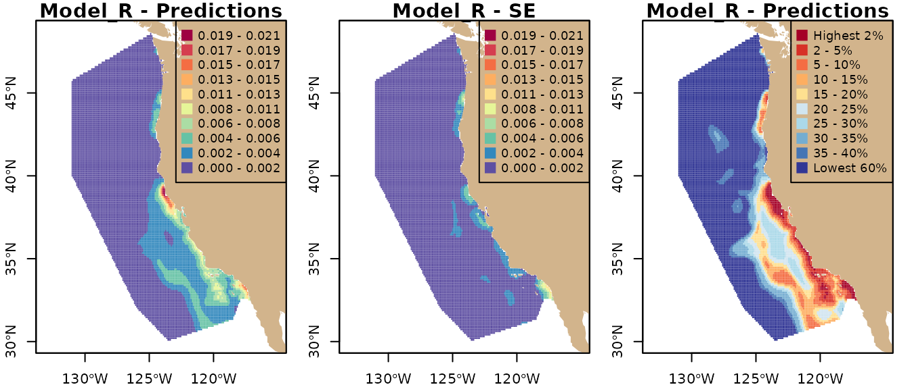

Example analysis - Woodman et al 2019
Samuel Woodman
2024-02-15
Source:vignettes/example-analysis.Rmd
example-analysis.Rmd
library(dplyr)
library(eSDM)
library(sf)
source(system.file("eSDM_vignette_helper.R", package = "eSDM"), local = TRUE, echo = FALSE)Overview
eSDM allows users to create ensembles of predictions
from species distribution models (SDMs), either using the
eSDM GUI or manually in R using eSDM
functions. This vignette demonstrates creating and evaluating ensembles
using eSDM functions by manually performing the example
analysis from Woodman et al. (2019). The example analysis
explores differences between blue whale SDM predictions for the
California Current Ecosystem (CCE) from Becker et al. (2016;
i.e., Model_B), Hazen et al. (2017; i.e., Model_H), and Redfern
et al. (2017; i.e., Model_R). It also creates and evaluates
ensembles of the predictions, with associated uncertainty. See Woodman
et al. (2019) for additional details, and in particular Table 1
for details about differences between the models.
In this vignette, the three sets of predictions and the validation data are read from .rds files because the original files were too large to be included in the package. The sections where these data are imported includes the code for reading the data from their original files, although this code has been commented out. The original files can be downloaded through the GUI or at https://github.com/smwoodman/eSDM-data.
This document contains code for plotting predictions. However, by default some of the plotting code is not run because it can take several minutes (these code chunks contain the comment “code not run”). If desired, you may run these code chunks manually in R.
Before using data from this example analysis, please see the
README.txt file for proper citation information (located at
system.file("extdata/README.txt", package = "eSDM") and
contact the author.
Import SDM predictions
The first step of the example analysis is to import and process the
Model_B, Model_H, and Model_R predictions, along with their standard
error (SE) values. Use pts2poly_centroids to create
sf objects from polygon centroids from CSV files,
raster::raster to import raster files, and
sf::st_read to import GIS files. The dimensions of the
Model_B and Model_H predictions are 0.09 x 0.09 degrees and 0.25 x 0.25
degrees, respectively; the second argument of
pts2poly_centroids is half the length of one side of the
polygon. GIS files already have a defined geometry that is read by
st_read. Before overlaying predictions, you must ensure the
following:
- All predictions are
sfobjects. See below for examples of converting a CSV file of grid centroids or arasterobject to ansfobject. - The geometries of the predictions are valid; this can be checked
using
sf::st_is_valid. - The geometries of the predictions have a defined coordinate
reference system (crs); this can be checked using
sf::st_crs. - The predictions have the same longitudinal range (i.e., either [0,
360] or [-180, 180]); this can be checked using
sf::st_bbox. You can usesf::st_wrap_datelineto convert ansfobject to the longitudinal range [-180, 180], but note that this will cause plots to span [-180, 180] as well.
We can visualize the SDM predictions after importing and processing
them. The plots below make up Fig. 3 in Woodman et al. (2019).
This vignette uses the custom plot_sf_3panel function (in
‘vignette_helper.R’ located at
system.file("vignette_helper.R", package = "eSDM") for
plotting. plot_sf_3panel and tmap_sdm (used
later in this vignette) were not included as functions in the
eSDM package because they are specific to the example
analysis region and SDMs. However, they can provide guidelines and a
framework for plotting SDMs using the sf and
tmap packages, allowing you to adapt these functions to
your specific plotting needs.
# Import, process, and plot Model_B predictions
# model.b <- read.csv("Predictions_Beckeretal2016.csv")
model.b.sf <- readRDS(system.file("extdata/Predictions_Beckeretal2016.rds", package = "eSDM")) %>%
eSDM::pts2poly_centroids(0.09 / 2, crs = 4326) %>%
st_wrap_dateline() %>%
st_set_agr("constant")
model.b.sf
#> Simple feature collection with 14807 features and 2 fields
#> Attribute-geometry relationships: constant (2)
#> Geometry type: POLYGON
#> Dimension: XY
#> Bounding box: xmin: -131.085 ymin: 30.045 xmax: -117.135 ymax: 48.585
#> Geodetic CRS: WGS 84
#> First 10 features:
#> pred_bm se geometry
#> 1 5.45105e-05 5.097233e-05 POLYGON ((-123.525 30.135, ...
#> 2 5.24382e-05 5.361254e-05 POLYGON ((-123.435 30.135, ...
#> 3 4.69742e-05 5.109131e-05 POLYGON ((-123.345 30.135, ...
#> 4 4.23983e-05 4.816211e-05 POLYGON ((-123.255 30.135, ...
#> 5 4.36095e-05 5.090475e-05 POLYGON ((-123.165 30.135, ...
#> 6 1.07515e-04 8.646826e-05 POLYGON ((-123.705 30.225, ...
#> 7 1.28310e-04 1.032217e-04 POLYGON ((-123.615 30.225, ...
#> 8 1.18435e-04 1.022898e-04 POLYGON ((-123.525 30.225, ...
#> 9 1.09491e-04 1.067405e-04 POLYGON ((-123.435 30.225, ...
#> 10 1.07454e-04 1.186867e-04 POLYGON ((-123.345 30.225, ...
# Make base map
map.world <- eSDM::gshhg.l.L16
# Other option for making base map
# map.world <- st_geometry(st_as_sf(maps::map('world', plot = FALSE, fill = TRUE)))
plot_sf_3panel(
model.b.sf, "pred_bm", main.txt = "Model_B - ", map.base = map.world,
x.axis.at = c(-130, -125, -120)
)
# Import, process, and plot Model_H predictions
# model.h <- read.csv("Predictions_Hazenetal2017.csv")
model.h.sf <- readRDS(system.file("extdata/Predictions_Hazenetal2017.rds", package = "eSDM")) %>%
dplyr::select(lon, lat, pred_bm, se) %>%
eSDM::pts2poly_centroids(0.25 / 2, crs = 4326, agr = "constant")
model.h.sf
#> Simple feature collection with 4052 features and 2 fields
#> Attribute-geometry relationships: constant (2)
#> Geometry type: POLYGON
#> Dimension: XY
#> Bounding box: xmin: -135.125 ymin: 29.875 xmax: -115.875 ymax: 49.125
#> Geodetic CRS: WGS 84
#> First 10 features:
#> pred_bm se geometry
#> 1 0.04554697 0.053372075 POLYGON ((-134.875 30.125, ...
#> 2 0.03947545 0.033144082 POLYGON ((-134.625 30.125, ...
#> 3 0.05845509 0.034460358 POLYGON ((-134.375 30.125, ...
#> 4 0.05839801 0.036792245 POLYGON ((-134.125 30.125, ...
#> 5 0.07102714 0.041752473 POLYGON ((-133.875 30.125, ...
#> 6 0.04468036 0.018479887 POLYGON ((-133.625 30.125, ...
#> 7 0.05754484 0.009460079 POLYGON ((-133.375 30.125, ...
#> 8 0.03529852 0.017022402 POLYGON ((-133.125 30.125, ...
#> 9 0.10666410 0.063944752 POLYGON ((-132.875 30.125, ...
#> 10 0.11393473 0.061255526 POLYGON ((-132.625 30.125, ...
plot_sf_3panel(
model.h.sf, "pred_bm", main.txt = "Model_H - ", map.base = map.world,
x.axis.at = c(-135, -130, -125, -120)
)
# Import, process, and plot Model_R predictions
# model.r <- st_read("Shapefiles/Predictions_Redfernetal2017.shp")
model.r.sf <- readRDS(system.file("extdata/Predictions_Redfernetal2017.rds", package = "eSDM")) %>%
st_make_valid() %>%
st_set_agr("constant")
#> old-style crs object detected; please recreate object with a recent sf::st_crs()
#> old-style crs object detected; please recreate object with a recent sf::st_crs()
model.r.sf
#> Simple feature collection with 11419 features and 2 fields
#> Attribute-geometry relationships: constant (2)
#> Geometry type: GEOMETRY
#> Dimension: XY
#> Bounding box: xmin: -14587510 ymin: 3176115 xmax: -13037510 ymax: 4766115
#> Projected CRS: +proj=cea +lon_0=0 +lat_ts=0 +x_0=0 +y_0=0 +datum=WGS84 +units=m +no_defs
#> First 10 features:
#> pred_bm se geometry
#> 1 0.008025090 0.0064684470 POLYGON ((-13037935 3406115...
#> 2 0.009190831 0.0074858911 POLYGON ((-13047508 3426031...
#> 3 0.007789538 0.0063127310 MULTIPOLYGON (((-13046190 3...
#> 4 0.004794084 0.0007867314 POLYGON ((-13197508 3446115...
#> 5 0.004978912 0.0015665607 POLYGON ((-13177508 3446115...
#> 6 0.004869921 0.0008426572 MULTIPOLYGON (((-13207508 3...
#> 7 0.004953553 0.0012025559 MULTIPOLYGON (((-13196471 3...
#> 8 0.004699313 0.0014451453 POLYGON ((-13177508 3446115...
#> 9 0.004930461 0.0011039563 POLYGON ((-13198089 3456115...
#> 10 NA NA POLYGON ((-13067508 3466115...
plot_sf_3panel(
model.r.sf, "pred_bm", main.txt = "Model_R - ", map.base = map.world,
x.axis.at = c(-130, -125, -120)
)
# Example code for converting raster to sf object; code not run
logo <- raster::raster(system.file("external/rlogo.grd", package="raster"))
logo.sf <- as(logo, "SpatialPolygonsDataFrame") %>%
sf::st_as_sf()Overlay predictions
Because the original predictions have both different spatial
resolutions and coordinate systems, we must overlay them onto the same
base geometry. See Woodman et al. (2019), the eSDM
GUI manual, or the overlay_sdm documentation for details
about the overlay process. For the example analysis, we use the geometry
of Model_R as the base geometry. However, first we must import and
process the study area and erasing polygons, with which we clip and
erase land from the base geometry, respectively. We also visualize the
base geometry.
# Study area polygon
poly.study <- st_read(system.file("extdata/Shapefiles/Study_Area_CCE.shp", package = "eSDM")) %>%
st_geometry() %>%
st_transform(st_crs(model.r.sf))
#> Reading layer `Study_Area_CCE' from data source
#> `/home/runner/work/_temp/Library/eSDM/extdata/Shapefiles/Study_Area_CCE.shp'
#> using driver `ESRI Shapefile'
#> Simple feature collection with 1 feature and 6 fields
#> Geometry type: POLYGON
#> Dimension: XY
#> Bounding box: xmin: -131 ymin: 30.05 xmax: -117.013 ymax: 48.6
#> Geodetic CRS: WGS 84
# Erasing polygon; clip to the buffered study area polygon reduces future computation time
poly.erase <- eSDM::gshhg.l.L16 %>%
st_transform(st_crs(model.r.sf)) %>%
st_make_valid() %>%
st_crop(st_buffer(poly.study, 100000))
#> old-style crs object detected; please recreate object with a recent sf::st_crs()
# Create the base geometry; st_erase() function defined in eSDM_vignette_helper.R
# Keep base.geom.sf so we don't have to run overlay function on model.r.sf
base.geom.sf <- model.r.sf %>%
mutate(idx = 1:nrow(model.r.sf)) %>%
select(idx) %>%
st_set_agr("constant") %>%
# st_geometry() %>%
st_erase(poly.erase) %>%
st_intersection(poly.study) %>%
st_cast("MULTIPOLYGON")
#> Warning: attribute variables are assumed to be spatially constant throughout
#> all geometries
base.geom <- st_geometry(base.geom.sf)
# Visualize the base geometry
plot(st_transform(base.geom, 4326), col = NA, border = "black", axes = TRUE)
plot(map.world, add = TRUE, col = "tan", border = NA)
graphics::box()Next, we convert any associated uncertainty values to variance. Uncertainty values must be overlaid as variance values to remain statistically valid.
# Convert SE values to variance
model.b.sf <- model.b.sf %>%
mutate(variance = se^2) %>%
dplyr::select(pred_bm, se, variance)
model.h.sf <- model.h.sf %>%
mutate(variance = se^2) %>%
dplyr::select(pred_bm, se, variance)
model.r.sf <- model.r.sf %>%
mutate(variance = se^2) %>%
dplyr::select(pred_bm, se, variance)Now we can overlay the original predictions onto the base geometry.
Note that because we clipped and erased land from the base geometry, we
cannot simply use the original Model_R predictions and geometry.
However, we can ‘overlay’ the Model_R predictions by matching indices of
base geometry polygons and Model_R prediction values. This, i.e., not
running overlay_sdm(base.geom, model.r.sf, ...), is
important because intersecting a complex polygon with (basically) itself
is very computationally complex.
### CODE BLOCK NOT RUN
# Perform overlay, and convert overlaid uncertainty values to SEs
over1.sf <- eSDM::overlay_sdm(base.geom, st_transform(model.b.sf, st_crs(base.geom)), c("pred_bm", "variance"), 50) %>%
mutate(se = sqrt(variance))
over2.sf <- eSDM::overlay_sdm(base.geom, st_transform(model.h.sf, st_crs(base.geom)), c("pred_bm", "variance"), 50) %>%
mutate(se = sqrt(variance))
# over3.sf <- eSDM::overlay_sdm(base.geom, model.r.sf, c("pred_bm", "variance"), 50) %>%
# mutate(se = sqrt(variance))
# ## Save these results for CRAN
# saveRDS(over1.sf, file = "../inst/extdata/Predictions_Beckeretal2016_overlaid.rds")
# saveRDS(over2.sf, file = "../inst/extdata/Predictions_Hazenetal2017_overlaid.rds")NOTE: the above code block is not run in the vignette because of processing times. The relevant, pre-computed outputs are loaded in the following code block:
over1.sf <- readRDS(system.file("extdata/Predictions_Beckeretal2016_overlaid.rds", package = "eSDM")) %>%
st_set_crs(st_crs(base.geom))
over2.sf <- readRDS(system.file("extdata/Predictions_Hazenetal2017_overlaid.rds", package = "eSDM")) %>%
st_set_crs(st_crs(base.geom))
over3.sf <- st_drop_geometry(model.r.sf) %>%
mutate(idx = 1:nrow(model.r.sf)) %>%
left_join(base.geom.sf, by = "idx") %>%
select(-idx) %>%
st_as_sf()We can plot the overlaid predictions to show that the overlaid distribution patterns are very similar to those of the original predictions.
# Plot overlaid predictions; code not run
plot_sf_3panel(over1.sf, "pred_bm", main.txt = "Overlaid Model_B - ", map.base = map.world)
plot_sf_3panel(over2.sf, "pred_bm", main.txt = "Overlaid Model_H - ", map.base = map.world)
plot_sf_3panel(over3.sf, "pred_bm", main.txt = "Overlaid Model_R - ", map.base = map.world)Calculate evaluation metrics
To evaluate predictions and create ensembles with weights based on
evaluation metrics, we must load and process the validation data sets
for use with evaluation_metrics. The validation data must
be points of class sf with a column with either binary
presence/absence or count data. For the example analysis, we use three
validation sets in the example analysis, line transect data (Becker
et al. 2016), home range data (Irvine et al. 2014),
and these two data sets combined. Because our validation data are binary
(i.e., presence/absence), there is a column indicating whether each
value is a presence point (1) or absence point (0).
Note that in this vignette, the validation data are read from .rds files because the original file was too big to be included in the package. However, the original file can be downloaded through the GUI or at https://github.com/smwoodman/eSDM-data
Use the function sf::st_as_sf to convert a data frame
with lon/lat coordinates to an sf object.
# Import and process validation data
# valid.data <- read.csv("eSDM_Validation_data_all.csv", stringsAsFactors = FALSE)
valid.data <- readRDS(system.file("extdata/eSDM_Validation_data_all.rds", package = "eSDM"))%>%
arrange(source, lat, lon) %>%
mutate(pres_abs = ifelse(pres_abs > 0, 1, 0)) %>% #For demonstration purposes; pres_abs column is already binary
st_as_sf(coords = c("lon", "lat"), crs = 4326, agr = "constant") %>%
st_transform(st_crs(base.geom))
# Extract the line transect and home range validation data
valid.data.lt <- valid.data %>% filter(source == "Becker_et_al_2016")
valid.data.hr <- valid.data %>% filter(source == "Irvine_et_al_2014")
# Summarize the number of presence and absence points
valid.data %>%
st_set_geometry(NULL) %>%
group_by(source) %>%
summarize(pres = sum(pres_abs == 1),
abs = sum(pres_abs == 0)) %>%
knitr::kable(caption = "Validation data summary")| source | pres | abs |
|---|---|---|
| Becker_et_al_2016 | 71 | 7368 |
| Irvine_et_al_2014 | 328 | 10386 |
Now we can calculate the AUC and TSS metrics for the original and
overlaid predictions. The displayed table is from Table 3 of Woodman
et al. (2019). Note that evaluation_metrics
requires that validation data have the same coordinate reference system
as the predictions being evaluated.
# Calculate evaluation metrics with different validation data sets; code not run
names.1 <- c(
"Model_B_orig", "Model_H_orig", "Model_R_orig",
"Model_B_overlaid", "Model_H_overlaid", "Model_R_overlaid"
)
eval.lt <- data.frame(do.call(rbind, list(
eSDM::evaluation_metrics(model.b.sf, 1, st_transform(valid.data.lt, 4326), "pres_abs"),
eSDM::evaluation_metrics(model.h.sf, 1, st_transform(valid.data.lt, 4326), "pres_abs"),
eSDM::evaluation_metrics(model.r.sf, 1, valid.data.lt, "pres_abs"),
eSDM::evaluation_metrics(over1.sf, 1, valid.data.lt, "pres_abs"),
eSDM::evaluation_metrics(over2.sf, 1, valid.data.lt, "pres_abs"),
eSDM::evaluation_metrics(over3.sf, 1, valid.data.lt, "pres_abs")
))) %>%
mutate(Preds = names.1) %>%
dplyr::select(Preds, AUC_LT = X1, TSS_LT = X2)
eval.hr <- data.frame(do.call(rbind, list(
eSDM::evaluation_metrics(model.b.sf, 1, st_transform(valid.data.hr, 4326), "pres_abs"),
eSDM::evaluation_metrics(model.h.sf, 1, st_transform(valid.data.hr, 4326), "pres_abs"),
eSDM::evaluation_metrics(model.r.sf, 1, valid.data.hr, "pres_abs"),
eSDM::evaluation_metrics(over1.sf, 1, valid.data.hr, "pres_abs"),
eSDM::evaluation_metrics(over2.sf, 1, valid.data.hr, "pres_abs"),
eSDM::evaluation_metrics(over3.sf, 1, valid.data.hr, "pres_abs")
))) %>%
mutate(Preds = names.1) %>%
dplyr::select(Preds, AUC_HR = X1, TSS_HR = X2)
eval.combo <- data.frame(do.call(rbind, list(
eSDM::evaluation_metrics(model.b.sf, 1, st_transform(valid.data, 4326), "pres_abs"),
eSDM::evaluation_metrics(model.h.sf, 1, st_transform(valid.data, 4326), "pres_abs"),
eSDM::evaluation_metrics(model.r.sf, 1, valid.data, "pres_abs"),
eSDM::evaluation_metrics(over1.sf, 1, valid.data, "pres_abs"),
eSDM::evaluation_metrics(over2.sf, 1, valid.data, "pres_abs"),
eSDM::evaluation_metrics(over3.sf, 1, valid.data, "pres_abs")
))) %>%
mutate(Preds = names.1) %>%
dplyr::select(Preds, AUC = X1, TSS = X2)
read.csv(system.file("extdata/Table3.csv", package = "eSDM")) %>%
filter(grepl("Model_", Predictions)) %>%
dplyr::select(Predictions, AUC, TSS, `AUC-LT` = AUC.LT, `TSS-LT` = TSS.LT,
`AUC-HR` = AUC.HR, `TSS-HR` = TSS.HR) %>%
knitr::kable(caption = "Evaluation metrics", digits = 3, align = "lcccccc")| Predictions | AUC | TSS | AUC-LT | TSS-LT | AUC-HR | TSS-HR |
|---|---|---|---|---|---|---|
| Model_B - original | 0.912 | 0.717 | 0.732 | 0.374 | 0.963 | 0.824 |
| Model_H - original | 0.734 | 0.414 | 0.620 | 0.284 | 0.772 | 0.471 |
| Model_R - original | 0.919 | 0.756 | 0.684 | 0.290 | 0.980 | 0.882 |
| Model_B - overlaid | 0.916 | 0.742 | 0.732 | 0.380 | 0.967 | 0.856 |
| Model_H - overlaid | 0.735 | 0.406 | 0.620 | 0.286 | 0.772 | 0.460 |
| Model_R - overlaid | 0.919 | 0.756 | 0.684 | 0.290 | 0.980 | 0.882 |
We can see that for each set of predictions, the original and overlaid evaluation metrics are quite similar, again showing that the overlay conserved the predicted blue whale distributions.
Create and evaluate ensemble predictions
Before creating the ensembles, we must rescale the overlaid predictions. We rescaled the predictions using the abundance rescaling method and an abundance of 1648 (Becker et al. 2016). Using the sum to 1 rescaling method would result in ensembles with similar distribution patterns, but the actual density values could not be used to provide a meaningful abundance estimate.
ensemble_rescale requires a single sf
object that contains all of the data being rescaled. Thus, we extract
the prediction and variance values before using the rescaling
function.
# Rescale predictions
over.sf <- bind_cols(
over1.sf %>% st_set_geometry(NULL) %>% dplyr::select(pred_bm1 = pred_bm, var1 = variance),
over2.sf %>% st_set_geometry(NULL) %>% dplyr::select(pred_bm2 = pred_bm, var2 = variance),
over3.sf %>% st_set_geometry(NULL) %>% dplyr::select(pred_bm3 = pred_bm, var3 = variance)
) %>%
st_sf(geometry = base.geom, agr = "constant")
over.sf.rescaled <- ensemble_rescale(
over.sf, c("pred_bm1", "pred_bm2", "pred_bm3"), "abundance", 1648,
x.var.idx = c("var1", "var2", "var3")
)
# Check that overlaid predictions predict expected abundance
eSDM::model_abundance(over.sf.rescaled, "pred_bm1")
#> pred_bm1
#> 1648
eSDM::model_abundance(over.sf.rescaled, "pred_bm2")
#> pred_bm2
#> 1648
eSDM::model_abundance(over.sf.rescaled, "pred_bm3")
#> pred_bm3
#> 1648
summary(over.sf.rescaled)
#> pred_bm1 var1 pred_bm2 var2
#> Min. :0.00001 Min. :0e+00 Min. :0.00003 Min. :0
#> 1st Qu.:0.00029 1st Qu.:0e+00 1st Qu.:0.00063 1st Qu.:0
#> Median :0.00080 Median :0e+00 Median :0.00104 Median :0
#> Mean :0.00148 Mean :0e+00 Mean :0.00147 Mean :0
#> 3rd Qu.:0.00180 3rd Qu.:0e+00 3rd Qu.:0.00187 3rd Qu.:0
#> Max. :0.01970 Max. :7e-05 Max. :0.00645 Max. :0
#> NA's :38 NA's :38 NA's :95 NA's :95
#> pred_bm3 var3 geometry
#> Min. :0.00000 Min. :0.00000 MULTIPOLYGON :11419
#> 1st Qu.:0.00020 1st Qu.:0.00000 epsg:NA : 0
#> Median :0.00051 Median :0.00000 +proj=cea ...: 0
#> Mean :0.00147 Mean :0.00000
#> 3rd Qu.:0.00225 3rd Qu.:0.00000
#> Max. :0.01866 Max. :0.00013
#> NA's :41 NA's :41We can see that the prediction values are now much more comparable, and thus a subset of the predictions will not contribute disproportionately to an ensemble.
We also must calculate the ensemble weights, which must be manually created. For the example analysis, we use several weighting methods: equal weights (i.e., unweighted), AUC-based weights, TSS-based weights, and weights calculated as the inverse of the prediction variance. Each set of weights must sum to 1, or each row must sum to 1 in the case of the weights calculated as the inverse of the prediction variance. Note that when calculating evaluation metrics, a message is printed if any of the validation data points do not intersect with a prediction polygon.
# Calculate ensemble weights
e.weights <- list(
eSDM::evaluation_metrics(over1.sf, 1, valid.data, "pres_abs"),
eSDM::evaluation_metrics(over2.sf, 1, valid.data, "pres_abs"),
eSDM::evaluation_metrics(over3.sf, 1, valid.data, "pres_abs")
)
#> There were 83 validation points that did not overlap with a non-NA prediction polygon
#> There were 171 validation points that did not overlap with a non-NA prediction polygon
#> There were 84 validation points that did not overlap with a non-NA prediction polygon
over.df.resc.var <- over.sf.rescaled %>%
dplyr::select(var1, var2, var3) %>%
st_set_geometry(NULL)
e.weights.unw <- c(1, 1, 1) / 3
e.weights.auc <- sapply(e.weights, function(i) i[1]) / sum(sapply(e.weights, function(i) i[1]))
e.weights.tss <- sapply(e.weights, function(i) i[2]) / sum(sapply(e.weights, function(i) i[2]))
e.weights.var <- data.frame(t(apply(
1 / over.df.resc.var, 1, function(i) {i / sum(i, na.rm = TRUE)}
)))
e.weights.unw
#> [1] 0.3333333 0.3333333 0.3333333
e.weights.auc
#> [1] 0.3564575 0.2859788 0.3575637
e.weights.tss
#> [1] 0.3897645 0.2127986 0.3974369
head(e.weights.var)
#> var1 var2 var3
#> 1 0.30739591 0.6897710 0.002833083
#> 2 0.99305706 NA 0.006942942
#> 3 0.99479068 NA 0.005209324
#> 4 0.06759370 0.3232166 0.609189722
#> 5 0.05685041 0.8348384 0.108311140
#> 6 0.04114136 0.4182598 0.540598860Finally, we can create the ensembles. We calculate the ensemble uncertainty values with the among-model variance.
### Create ensembles
# Unweighted; calculate CV because it is used in Fig. 4 plot
ens.sf.unw <- eSDM::ensemble_create(
over.sf.rescaled, c("pred_bm1", "pred_bm2", "pred_bm3"), w = e.weights.unw,
x.var.idx = NULL
) %>%
mutate(SE = sqrt(Var_ens), CV = SE / Pred_ens) %>%
dplyr::select(Pred_ens, SE, CV) %>%
st_set_agr("constant")
# Weights based on AUC
ens.sf.wauc <- eSDM::ensemble_create(
over.sf.rescaled, c("pred_bm1", "pred_bm2", "pred_bm3"), w = e.weights.auc,
x.var.idx = NULL
) %>%
mutate(SE = sqrt(Var_ens)) %>%
dplyr::select(Pred_ens, SE) %>%
st_set_agr("constant")
# Weights based on TSS
ens.sf.wtss <- eSDM::ensemble_create(
over.sf.rescaled, c("pred_bm1", "pred_bm2", "pred_bm3"), w = e.weights.tss,
x.var.idx = NULL
) %>%
mutate(SE = sqrt(Var_ens)) %>%
dplyr::select(Pred_ens, SE) %>%
st_set_agr("constant")
# Weights based on the inverse of the variance
ens.sf.wvar <- eSDM::ensemble_create(
over.sf.rescaled, c("pred_bm1", "pred_bm2", "pred_bm3"), w = e.weights.var,
x.var.idx = NULL
) %>%
mutate(SE = sqrt(Var_ens)) %>%
dplyr::select(Pred_ens, SE) %>%
st_set_agr("constant")We could also have estimated the within-model ensemble uncertainty by
using the x.var.idx argument, as demonstrated in the
following code (not run).
# Create an ensemble and calculate within-model uncertainty; code not run
ens.sf.unw.wmv <- eSDM::ensemble_create(
over.sf.rescaled, c("pred_bm1", "pred_bm2", "pred_bm3"), w = e.weights.unw,
x.var.idx = c(var1, var2, var3)
) %>%
mutate(SE = sqrt(Var_ens)) %>%
dplyr::select(Pred_ens , SE)Now we can calculate AUC and TSS scores for the ensembles and compare them to those of original and ensemble predictions. Again, the evaluation code is not run; the displayed table is Table 3 from Woodman et al. (2019).
# Calculate evaluation metrics for ensembles; code not run
names.2 <- c(
"Ensemble – unweighted", "Ensemble – AUC-based weights",
"Ensemble – TSS-based weights", "Ensemble – variance-based weights"
)
eval.lt.ens <- data.frame(do.call(rbind, list(
eSDM::evaluation_metrics(ens.sf.unw, "Pred_ens", valid.data.lt, "pres_abs"),
eSDM::evaluation_metrics(ens.sf.wauc, "Pred_ens", valid.data.lt, "pres_abs"),
eSDM::evaluation_metrics(ens.sf.wtss, "Pred_ens", valid.data.lt, "pres_abs"),
eSDM::evaluation_metrics(ens.sf.wvar, "Pred_ens", valid.data.lt, "pres_abs")
))) %>%
mutate(Preds = names.2) %>%
dplyr::select(Preds, AUC_LT = X1, TSS_LT = X2)
eval.hr.ens <- data.frame(do.call(rbind, list(
eSDM::evaluation_metrics(ens.sf.unw, "Pred_ens", valid.data.hr, "pres_abs"),
eSDM::evaluation_metrics(ens.sf.wauc, "Pred_ens", valid.data.hr, "pres_abs"),
eSDM::evaluation_metrics(ens.sf.wtss, "Pred_ens", valid.data.hr, "pres_abs"),
eSDM::evaluation_metrics(ens.sf.wvar, "Pred_ens", valid.data.hr, "pres_abs")
))) %>%
mutate(Preds = names.2) %>%
dplyr::select(Preds, AUC_HR = X1, TSS_HR = X2)
eval.combo.ens <- data.frame(do.call(rbind, list(
eSDM::evaluation_metrics(ens.sf.unw, "Pred_ens", valid.data, "pres_abs"),
eSDM::evaluation_metrics(ens.sf.wauc, "Pred_ens", valid.data, "pres_abs"),
eSDM::evaluation_metrics(ens.sf.wtss, "Pred_ens", valid.data, "pres_abs"),
eSDM::evaluation_metrics(ens.sf.wvar, "Pred_ens", valid.data, "pres_abs")
))) %>%
mutate(Preds = names.2) %>%
dplyr::select(Preds, AUC = X1, TSS = X2)
read.csv(system.file("extdata/Table3.csv", package = "eSDM")) %>%
dplyr::select(Predictions, AUC, TSS, `AUC-LT` = AUC.LT, `TSS-LT` = TSS.LT,
`AUC-HR` = AUC.HR, `TSS-HR` = TSS.HR) %>%
knitr::kable(caption = "Evaluation metrics", digits = 3, align = "lcccccc")| Predictions | AUC | TSS | AUC-LT | TSS-LT | AUC-HR | TSS-HR |
|---|---|---|---|---|---|---|
| Model_B - original | 0.912 | 0.717 | 0.732 | 0.374 | 0.963 | 0.824 |
| Model_H - original | 0.734 | 0.414 | 0.620 | 0.284 | 0.772 | 0.471 |
| Model_R - original | 0.919 | 0.756 | 0.684 | 0.290 | 0.980 | 0.882 |
| Model_B - overlaid | 0.916 | 0.742 | 0.732 | 0.380 | 0.967 | 0.856 |
| Model_H - overlaid | 0.735 | 0.406 | 0.620 | 0.286 | 0.772 | 0.460 |
| Model_R - overlaid | 0.919 | 0.756 | 0.684 | 0.290 | 0.980 | 0.882 |
| Ensemble - unweighted | 0.915 | 0.772 | 0.699 | 0.345 | 0.972 | 0.888 |
| Ensemble - AUC-based weights | 0.917 | 0.777 | 0.703 | 0.349 | 0.973 | 0.893 |
| Ensemble - TSS-based weights | 0.920 | 0.785 | 0.708 | 0.352 | 0.975 | 0.900 |
| Ensemble - variance-based weights | 0.888 | 0.670 | 0.713 | 0.344 | 0.936 | 0.764 |
We can see that the ensemble with weights based on TSS values had the highest scores of the ensemble predictions, and mostly higher scores that the original predictions. We can visualize this ensemble to compare it with known blue whale habitat.
# Simple code to visualize ensemble created with weights based on TSS values
plot_sf_3panel(
rename(ens.sf.wtss, se = SE), "Pred_ens", main.txt = "Ensemble-TSS - ",
map.base = map.world, x.axis.at = c(-130, -125, -120)
)Below is code to visualize the unweighted ensembles and this ensemble
(i.e., create plots similar to Figs. 4 and 5 in Woodman et
al.). This code uses custom functions (located at
system.file("eSDM_vignette_helper.R", package = "eSDM"))
that leverage the tmap package to generate plots. However,
by default this code is not run because each plot takes several minutes
to generate.
### Figure 4; code not run
library(tmap)
# Values passed to tmap_sdm - range of map
range.poly <- st_sfc(
st_polygon(list(matrix(
c(-132, -132, -116, -116, -132, 29.5, 49, 49, 29.5, 29.5), ncol = 2
))),
crs = 4326
)
rpoly.mat <- matrix(st_bbox(range.poly), ncol = 2)
# Values passed to tmap_sdm - size of text labels and legend width
main.size <- 0.8
leg.size <- 0.55
leg.width <- 0.43
grid.size <- 0.55
# Values passed to tmap_sdm - color scale info
blp1 <- tmap_sdm_help(ens.sf.unw, "Pred_ens")
blp2 <- tmap_sdm_help(ens.sf.unw, "CV")
# Plot of predictions (whales / km^-2)
tmap.obj1 <- tmap_sdm(
ens.sf.unw, "Pred_ens", blp1, map.world, rpoly.mat,
"Unweighted ensemble - predictions",
main.size, leg.size, leg.width, grid.size
)
# Plot of SE values (with same color sceme as predictions)
tmap.obj2 <- tmap_sdm(
ens.sf.unw, "SE", blp1, map.world, rpoly.mat,
"Unweighted ensemble - SE",
main.size, leg.size, leg.width, grid.size
)
# Plot of CV values
tmap.obj3 <- tmap_sdm(
ens.sf.unw, "CV", blp2, map.world, rpoly.mat,
"Unweighted ensemble - CV",
main.size, leg.size, leg.width, grid.size
)
# Generate plot
tmap_arrange(
list(tmap.obj1, tmap.obj2, tmap.obj3), ncol = 3, asp = NULL, outer.margins = 0.05
)
### Figure 5; code not run
# Values passed to tmap_sdm - size of text labels and legend width
main.size <- 1.1
leg.size <- 0.7
leg.width <- 0.6
grid.size <- 0.7
# Values passed to tmap_sdm - color scale info
blp1b <- tmap_sdm_help(ens.sf.wtss, "Pred_ens")
blp2b <- tmap_sdm_help_perc(ens.sf.wtss, "Pred_ens")
# Plot of predictions (whales / km^-2)
tmap.obj1 <- tmap_sdm(
ens.sf.wtss, "Pred_ens", blp1, map.world, rpoly.mat, "Ensemble-TSS - Predictions",
main.size, leg.size, leg.width, grid.size
)
# Plot of SE values (with same color sceme as predictions)
tmap.obj2 <- tmap_sdm(
ens.sf.wtss, "SE", blp1, map.world, rpoly.mat, "Ensemble-TSS - SE",
main.size, leg.size, leg.width, grid.size
)
# Plot of predictions (percentiles)
tmap.obj3 <- tmap_sdm(
ens.sf.wtss, "Pred_ens", blp2b, map.world, rpoly.mat, "Ensemble-TSS - Predictions",
main.size, leg.size, leg.width, grid.size
)
# Plot of predictions (percentiles) with combined validation data presence points
tmap.obj4 <- tmap_sdm(
ens.sf.wtss, "Pred_ens", blp2b, map.world, rpoly.mat, "Ensemble-TSS - Predictions",
main.size, leg.size, leg.width, grid.size
) +
tm_shape(filter(valid.data, pres_abs == 1)) +
tm_dots(col = "black", size = 0.04, shape = 19)
# Generate plot
tmap_arrange(
list(tmap.obj1, tmap.obj2, tmap.obj3, tmap.obj4), ncol = 2, nrow = 2,
asp = NULL, outer.margins = 0.05
)References
Becker, E., Forney, K., Fiedler, P., Barlow, J., Chivers, S., Edwards, C., … Redfern, J. (2016). Moving towards dynamic ocean management: how well do modeled ocean products predict species distributions? Remote Sensing, 8, 149. https://doi.org/10.3390/rs8020149
Hazen, E.L., Palacios, D.M., Forney, K.A., Howell, E.A., Becker, E., Hoover, A.L., … Bailey, H. (2017). WhaleWatch: a dynamic management tool for predicting blue whale density in the California Current. Journal of Applied Ecology, 54, 1415-1428. https://doi.org/10.1111/1365-2664.12820
Irvine, L.M., Mate, B.R., Winsor, M.H., Palacios, D.M., Bograd, S.J., Costa, D.P. & Bailey, H. (2014). Spatial and temporal occurrence of blue whales off the U.S. West Coast, with implications for management. PLoS One, 9, e102959. https://doi.org/10.1371/journal.pone.0109485
Redfern, J.V., Moore, T.J., Fiedler, P.C., de Vos, A., Brownell, R.L., Forney, K.A., … Heikkinen, R. (2017). Predicting cetacean distributions in data-poor marine ecosystems. Diversity and Distributions, 23, 394-408. https://doi.org/10.1111/ddi.12537
Woodman, S.M., Forney, K.A., Becker, E.A., DeAngelis, M.L., Hazen, E.L., Palacios, D.M., Redfern, J.V. (2019). eSDM: A tool for creating and exploring ensembles of predictions from species distribution and abundance models. Methods in Ecology and Evolution. 2019;10:1923-1933. https://doi.org/10.1111/2041-210X.13283